Flux Export Tool
This application runs in your browser, no addresses are sent to or stored in the server.
Waiting for updates...
Coin Tracker manu useful features and it is the one I use for my own crypto!
- Handles Flux Node Rewards without counting them against your subscription’s transaction limit.
- Avoid overlapping date ranges; partial-year imports that overlap will create duplicates.
- Import one wallet at a time. For transfers between your own wallets, link the outgoing and incoming entries as a “Transfer” in CoinTracker to mark them non-taxable.
- For Flux Parallel Asset swaps, link the PA wallet token entry and the Flux chain entry as a “Bridge” transfer to keep it non-taxable.
- Payments for renewing any Flux Applications you have deployed will be marked as Service fees.
BONUS: New Accoints Receive 20% Discount!
Sign up here: https://cointracker.cello.so/cOM1jhoGB7D
I receive a referral bonus after 30 days (the refund period).
Step By Step Demo
-
First add any exchanges you have. Here I have Binance.us (via API) and Crypto.com App (via csv import). I also limited the display to 12/22 to 12/25 for this demo.
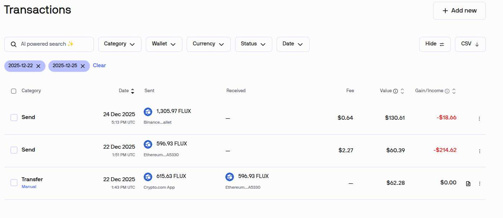 -
Export your Flux Wallets with FluxExport setting the date range and a different file name for each wallet.
-
Import your Flux Wallets.
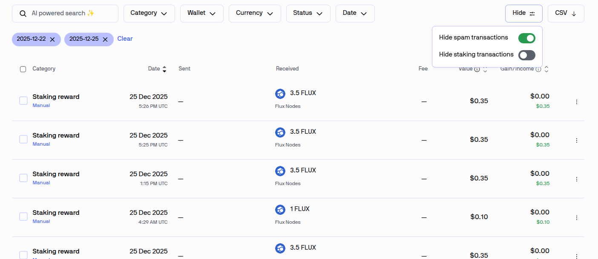Always review your transactions after an import there are some small changes that may be needed.
If your wallets include node rewards you will see 'Staking Reward' transactions, likely *many* of them. You can hide them with the HIDE option in the upper right corner of the transaction page.
-
Here are examples of transactions that need attention. We will be Linking pairs of transactions in order to allow for proper tracking of the cost basis of Flux to Flux transfers, including PA swaps. These are only done for wallets you own both sides of.
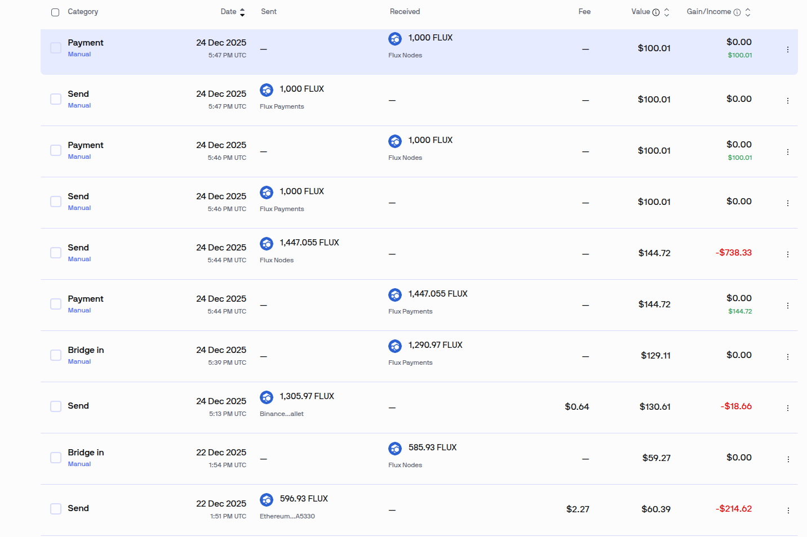 -
Let's start from the top down! The first thing we see is a wallet to waller transfer between my own wallets. In this case I was actually locking up node collateral, but that does not really matter to the IRS.
Select the send and payment. (In Coin Tracker a Payment is a payment you received) You click the check box of each and then click 'Link Trasnactions' on the control bar.
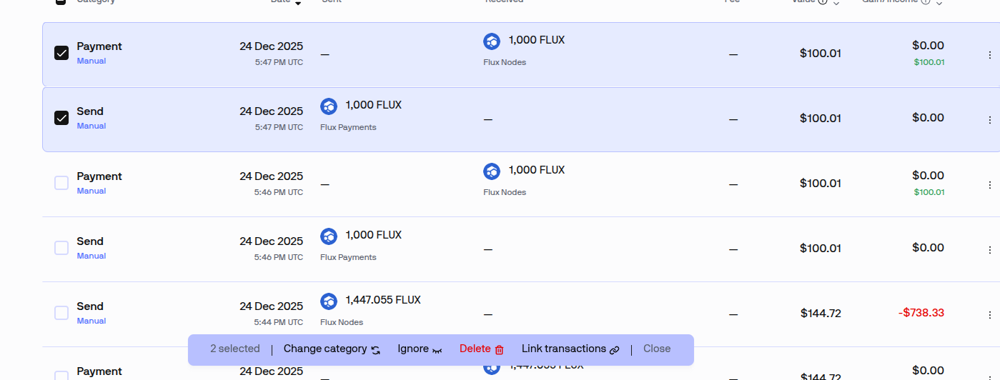 -
Set the type of link. We use Bridge for Swapping between PA (ie Flux and Flux-BSC) and Transfer for same asset type such as Flux to Flux or Flux-BSC to Flux-BSC.
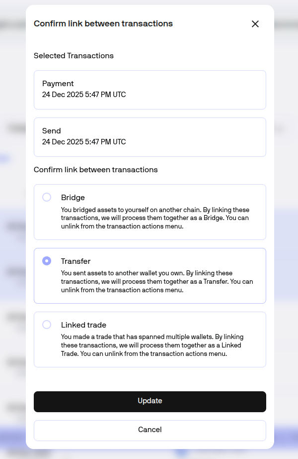 -
Now the transfer is linked and it is not a taxable event. There are two other transfers I updated.
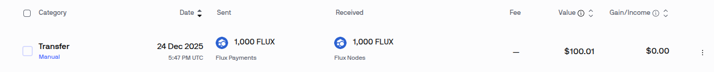 -
Now we have a Flux-BSC to Flux Swap. The fees need to be checked and updated. You see the difference between the send and receive is 15 Flux, we will add this to the sending transaction.
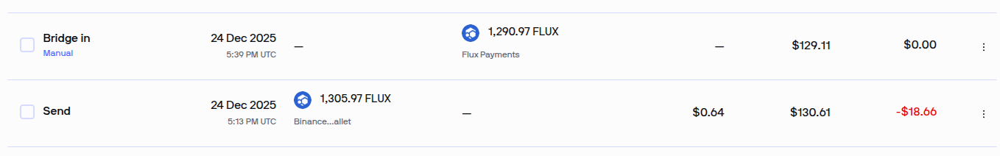 -
Click the dots on the right end of the Send transaction, below the 'Change Category' it says 'Edit Transaction' select that.
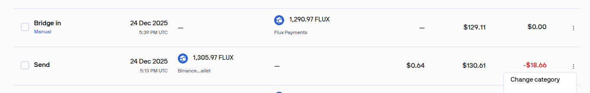 -
Edit Transaction. We need to add 15 Flux to the transaction fees.
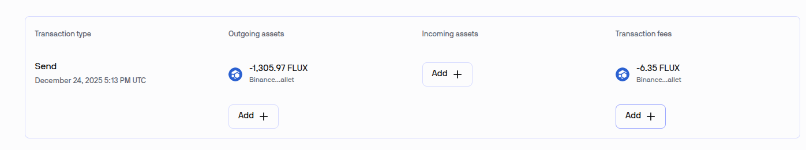Click the Add under Transaction fees and add 15 Flux.
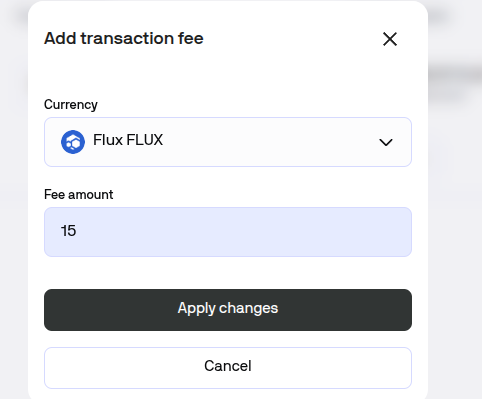 -
The updated transaction should look like this. If it looks ok click Save.
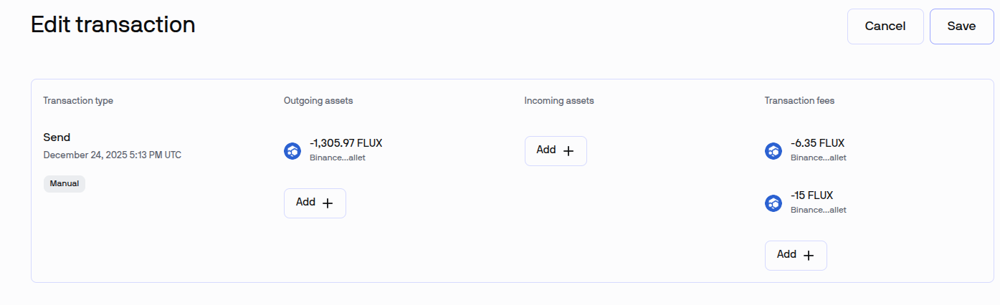 -
If you click the transaction it will expand to show all the details. Here we can review both sides before we link them.
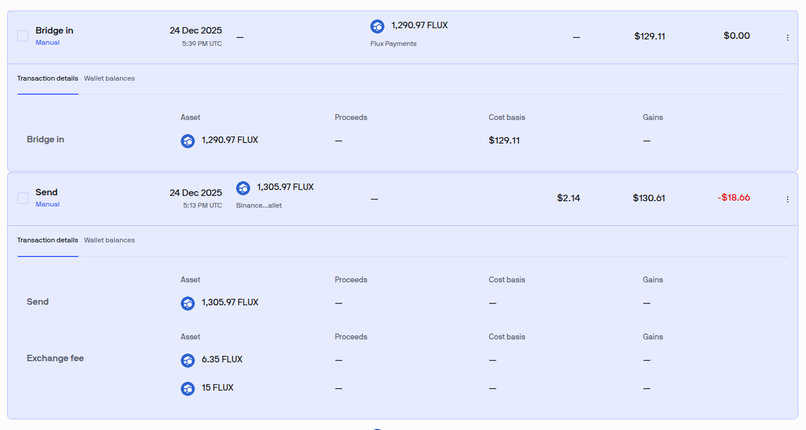 -
Now we link just like before with the Flux Transfers
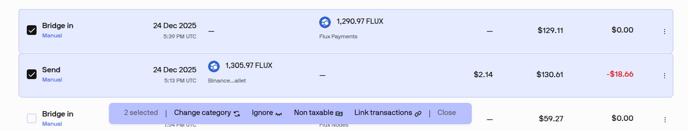But this time it is a Bridge Transfer since they are on different chains.
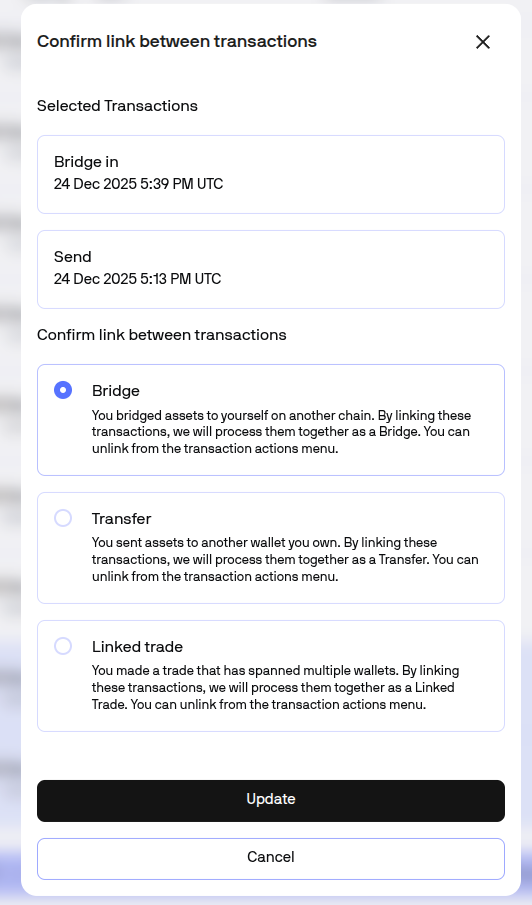 -
Now we can examine the details as a single transaction, again non-taxable.
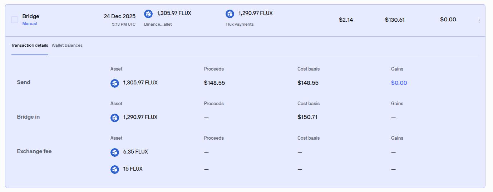 -
With the Flux-ETH swap the process is the same, but the fees look different.
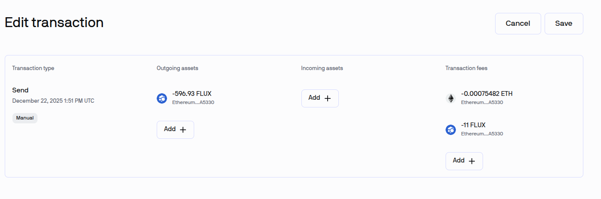 -
Take the same steps to Link and mark the transaction as a Bridge.
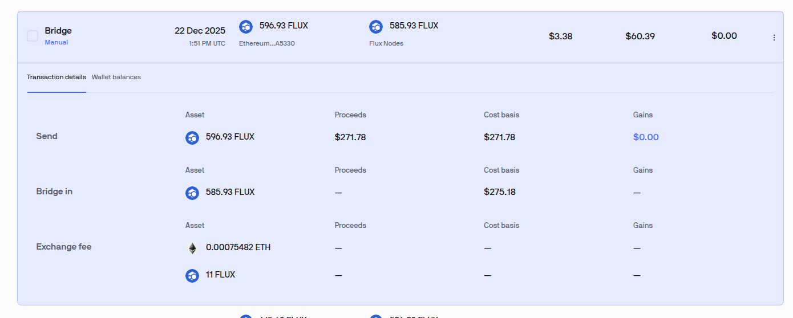 -
All Done!
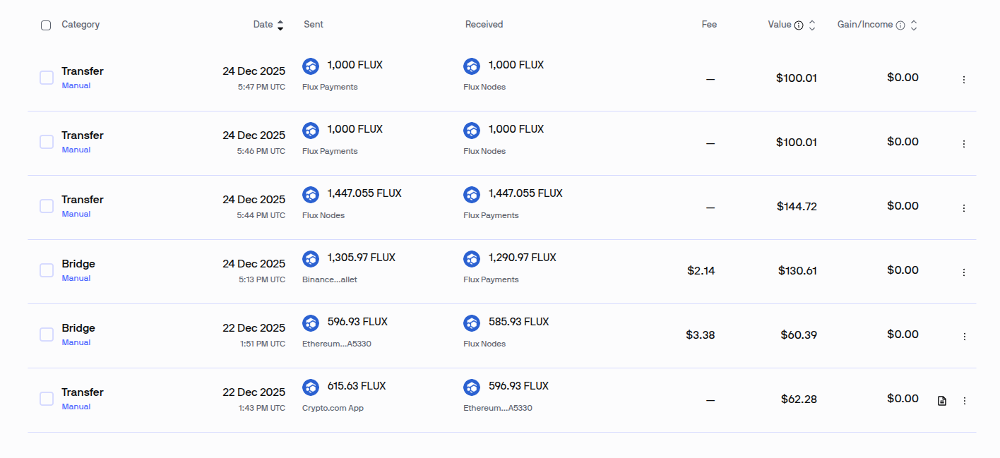 -
There may be other transactions we need to look at. If you have any questions ask me on the Flux Discord.
CoinLedger-specific guidance goes here. Add any tips or reminders for this format.
This format includes the net worth of each transaction and this tool uses hourly price data to calcualte it.
This format allows collecting node rewards and providing Hourly, Daily, Weekly or Monthy transactions. The summary transactions include the sum of the net worth of each reward.
Donations
Donations are very much appreciated.
Please consider donating to keep the website development going.
Flux Address: t3hfSzkcsgJraindYiu7U8GNW7EhNS19x3c
BTC Address: bc1qhdj3e0rffsqmvsyztxdf53j729gaplf2sw24qjdqqu9axflkfugs6mlxyj